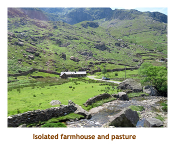
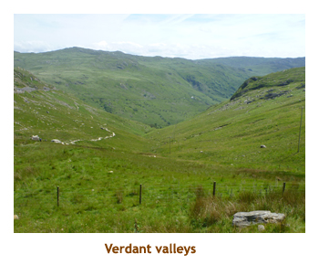

[ Home ] [ Travel ] [ Photography ] [ Pets ] [ Games] [ Rowing] [ Physics ]


Touring England and Wales
Windsor - Oxford, Stratford - York - Liverpool, Chester, Llandudno (2 days), Snowdonia - Ludlow, Cardiff - Bath, LondonTravel
Cruises
Past Cruises (Diaries)
Future Cruises
Rogues Galleries
Land Trips
Diaries (Land Trips)
Hawai'i - Big Island - 04'01
Hawai'i - Maui - 05'02
Hawai'i - Big Island - 04'03
Hawai'i - Kaua'i - 09'04
Hawai'i - Big Island - 04'06
Hawai'i - Maui - 04'06
Mainland China - 05'07
Phoenix, Arizona - 12'07
Greek Isles - 05'08
Hawai'i - Kaua'i - 09'08
Hawai'i - Big Island - 09'09
Hawai'i - Maui - 05'12
Hawai'i - Big Island - 04'13
Ireland - 08'13
Mexico - Cancun 11'13
France/Belgium/Lux 07'15
Hawai'i - Big Island - 05'17
England / Wales - 06'17
Hawai'i - Big Island - 09'19
Photography
Cameras
Underwater
Pets
Tara
Blackie
Whitey
Muffy
Ollie
Rusty
Fluffy
Rufus&Dufus
Games
Rowing
Physics
We had 23 people in our group so we kind of rattled around the 45 person bus. It was nice having all of the extra room. The travellers were all Canadian mostly from Ontario. We were the only ones from Calgary.
Days 1,2 (Jun 9,10) - Flight to Windsor
We stopped at the entrance to the castle grounds and were given a talk about the history of the castle. Then we were let loose to wander on our own. One wing of the castle was the Queen's residence, and the flag on the tower showed that she was currently living at the castle. She didn't come out to see us. We toured through the royal apartments, the "doll house", some other buildings and St. George's Chapel. The chapel is the burial place of a veritable "who's who" of British kings, queens and other royalty. From one of the ramparts one could see Eton College in the distance. Our tiredness was catching up with us so we walked back to our hotel, arriving about 5:00. At 6:00 we had our "welcome" dinner at the hotel and formally met our travel mates. Some had come from the previous Scotland tour, while others like us had just flown in. Afterwards we did a bit of a walk around the hotel area to work off our dinner. Then it was back to the hotel, pop a sleeping pill and to bed. It sure felt great to lie down after two days of travelling!
Day 3 (Jun 11) - A visit to Oxford and Stratford
We continued on towards Stratford through the Cotswolds. It was beautiful countryside. Outside of Stratford we stopped at the famous Anne Hathaway's cottage. The cottage had been much amended since Anne's days, and her original cottage was just a small portion of the cottage extant today. We toured through the cottage and folks in period costume explained the rooms. There were some interesting gardens by the cottage - herbs, veggies and flowers. Then we boarded the bus and drove into Stratford. We did a walking tour of the main street, and visited the house where Shakespeare was born. Like Anne's cottage, the house had been amended over the years. The town had taken full advantage of this famous son, with several theatres and many monuments to both the bard and his cast of characters. We checked into our hotel (Alveston Manor) and headed out for dinner and evening "on our own". Marjorie had read up on the "Dirty Duck" pub so we tried it for Sunday dinner. We split a beef rib pot roast dinner and it was plenty for the two of us. On the way back to the hotel we wandered along the Avon River. The public market was still going and lots of people were out for a stroll. A lovely day.
Day 4 (Jun 12) - The long road to York
Note: When I got home I googled the dancing men and it turns
out that they are morris dancers. This form of dance orignated in England
in the 15th century and now has adherents all over the world.
 |
||
Day 5 (Jun 13) - Across England to Llandudno
After lunch, we wandered the Albert Dock area. We walked to the cruise terminal and saw a large cruise ship docked there. We eventually chanced upon a National Express office. We took the opportunity to purchase our tickets for the Gatwick airport to Southampton bus trip coming up in a few days. One less thing to worry about. Then it was onto the bus for the short trip across the Mersey River to Chester. Before long we were in Chester and were let out in the old part of the city. We had been to Chester in 2009 and did a city tour. The old town really hadn't changed a lot. However,this time we were met by a Roman soldier who toured us around the strreets giving a Roman slant on the history and living conditions. It was an interesting viewpoint and I quite enjoyed the tour. We saw a number of Roman artifacts throughout the tour that I couldn't remember from our previous tour which had concentrated more on the Medieval architecture and the cathedral. Nice to do something different. We were then given some time to wander on our own and it was nice seeing the familiar area that we had tramped through in 2009. I really am fond of the half-timbered buildings. When our time was up, we returned to the pickup location to board the bus and we struck out for Wales and the town of Llandudno.
 The drive through northern Wales was wonderful. Lots of green fields and sheep.
We arrived in Llandudno about 6:00 PM. It was a tourist town with a row of
hotels along the huge cresent beach. Our hotel was the St. George's and was
lovely. We would be there for two nights. We had a group dinner at 6:30 in
the hotel and then had the evening on our own. Our plan for the evening
was to attend a Welsh men's choir in a nearby church at 8:00. However, the
meal really dragged on (slow service). We ended up leaving the dinner
before dessert was served and just made it to the church on time. The choir was
excellent and I knew at least half of the songs, so we really enjoyed it.
We wandered back to the hotel and then headed for bed.
The drive through northern Wales was wonderful. Lots of green fields and sheep.
We arrived in Llandudno about 6:00 PM. It was a tourist town with a row of
hotels along the huge cresent beach. Our hotel was the St. George's and was
lovely. We would be there for two nights. We had a group dinner at 6:30 in
the hotel and then had the evening on our own. Our plan for the evening
was to attend a Welsh men's choir in a nearby church at 8:00. However, the
meal really dragged on (slow service). We ended up leaving the dinner
before dessert was served and just made it to the church on time. The choir was
excellent and I knew at least half of the songs, so we really enjoyed it.
We wandered back to the hotel and then headed for bed.
Day 6 (Jun 14) - Around Snowdonia
Back aboard the bus we drove south alongside the island of Anglesey, soon arriving at the seaside port of Porthmadog about 11:00 AM. Here we were to board a steam train to take us into the heart of Snowdonia. Our tickets for the Ffestiniog narrow gauge railway were for 11:30 so we had time to wander the village and buy some sandwiches for lunch on the train. We boarded the train and ended up sharing a cabin for four with another interesting couple. We ate our lunch as we rumbled through the countryside. Our view was of fields and villages - beautiful. The train had stops at Minffordd and Tan-y-bwlch where we could get out to stretch our legs. After 1.5 hours we finally arrived at the terminus village of Blaenau Ffestiniog. It was a wonderful train ride. We reboarded our tour bus and headed off for the sights of Snowdonia.
 Snowdonia is a rugged, mountainous area in the northwest corner of Wales. The highest peak is Mount Snowdon. The surrounding hills are rich in slate which supported a huge slate industry in the 1800's. However, that market disappeared and now only the holes in the hills remain. We passed many slopes jagged with slate and could imagine the life of the people working the mines. A good portion of the area is pasture now with sheep the main grazer. We stopped at the highest point on the road - about 3,000 ft - not a great height to us Rocky Mountaineers. There we were given time to wander around, looking down green valleys, and up the rocky slopes to the peaks. There was a small village (ie. 4 or 5 buildings) and I think there was a train terminus for a line that connects to the Ffestiniog railway that we just got off. Then we reboarded the bus to descend from the mountains and return to the north sea coast.
|  |
We finished our Snowdonian loop tour back at Conwy castle, which we had seen in the distance this morning on our drive to Caernarfon castle. This time we stoppped at the castle and were given an hour to wander the castle grounds. The castle was built by Edward I in the 14th century. Our tour included admission to the castle so we strolled through the ruins imagining what it was like in the 14th century. We had lot of time so explored a bit of Conwy village outside of the castle too. Back on bus we drove back to Llandudno, arriving at our hotel about 6:00. Our guide recommended the Cottage Loaf pub for dinner, a short walk from the hotel. We couldn't find it at first, so asked a sales clerk in a closeby store. She not only told us where the pub was (hidden in a nearby alley) but also explained that her father used to own the pub (small town!). Marjorie had a humungous burger, and I had a steak and ale pie. Excellent! Afterwards we wandered back to the hotel and went to bed early.
Day 7 (Jun 15) - Through Wales to Cardiff
Then it was on to the town of Llangollen. We had been here several years ago and the town looked just the same. We were given 40 minutes to wander around the town center . We didn't take many photos as we had done so the previous time. After another southerly drive we nipped over the Welsh / England border to the villlage of Ludlow. Over the centuries the border was fluid, so Ludlow had been English and Welsh at different times. We were given 2 hours to explore the town and have lunch. We wandered through the quaint streets, ending up in the town square. In the heart of the city is Ludlow castle, built in the 11th century. We walked over to the castle, but there was a charge to go in. Instead, we went into a tea house that overlooked the castle and had a great salad and sandwich for lunch. Afterwards we went back to the town square where there was a large market going on. There were lots of fruits and veggies, as well as handicrafts. Then we were back on the bus again and heading towards Cardiff.
Leaving Ludlow, we were also leaving England as we crossed the border back into Wales. The next stop on our southbound journey was at the ruins of Tintern Abbey at the edge of the village of Tintern. The abbey was built in the 12th century and fell into ruins in the 16th century (thanks to Henry VIII). We were given 30 minutes to wander around the abbey grounds and, of course, take photos. Our final leg of the journey took us to The New House Country Hotel just a few miles out from Cardiff, in the surrounding hills. From the hotel we could see the city in the distance. We arrived at the hotel about 6:00. The tour included a group dinner in Cardiff, at the new Civic Center with live music. However, Marjorie had been fighting a bad cold and didn't feel up to it, so we waved goodbye to the tour group and instead had a quiet dinner at the hotel. Talking to some of the group the next day, it sounded like everyone really enjoyed the evening. I think they returned about 10:30.
Day 8 (Jun 16) - Drive to Bath, then London
Day 9 (Jun 17) - Leaving London for Southampton